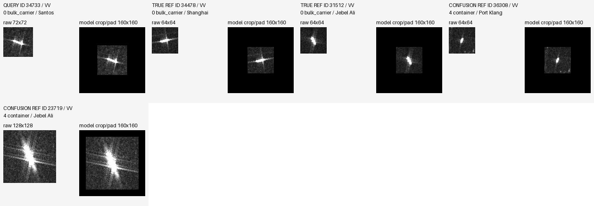
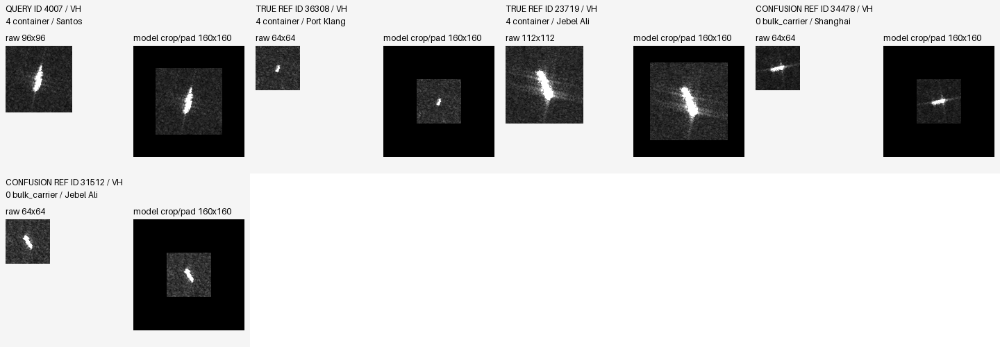
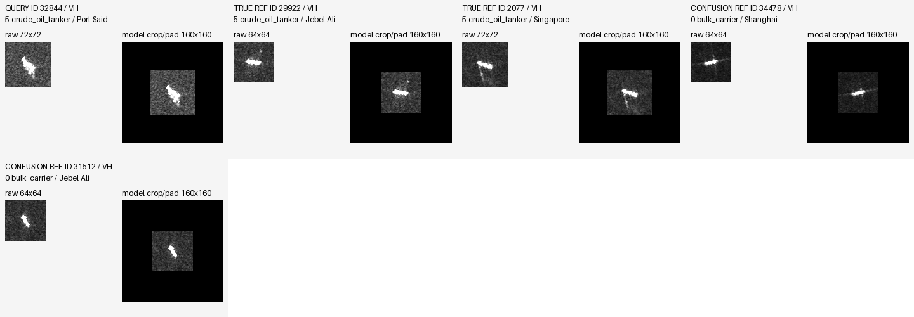
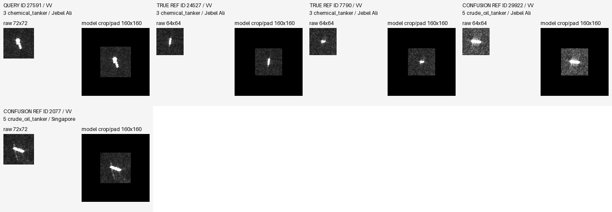
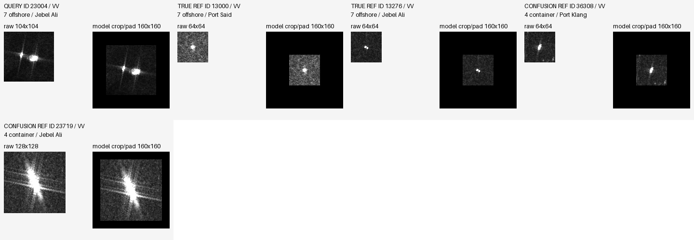

rescue_34733 / bulk_carrier / Santos / {'rescue': 3, 'harm': 0, 'CC': 0, 'WW': 0}
Mean margin delta: +2.084646
VV

VH

仅分析冻结模型已有 logits，无推理、训练、模型选择或目标集调参。3075 条历史目标观测不是全新盲测；两个 arm 按 seed 17/29/43 配对。先逐 seed 计算指标再取均值，不对概率做集成。OA/BA 为百分数，差值为百分点；BA 对当前分组实际出现的类别等权平均。NLL 使用自然对数，Brier 为全部 8 类概率平方误差之和，二者越低越好。三 seed 是已有训练次序，不是三套独立数据或独立预训练。
Native 1:1 pixels; missing views explicitly marked. Manual visual review pending.
Mean margin delta: +2.084646

Mean margin delta: -1.685485


Mean margin delta: +2.305580


Mean margin delta: +3.509818


Mean margin delta: +1.672917


Mean margin delta: -1.305049


Mean margin delta: +1.871081


Mean margin delta: -2.269052
